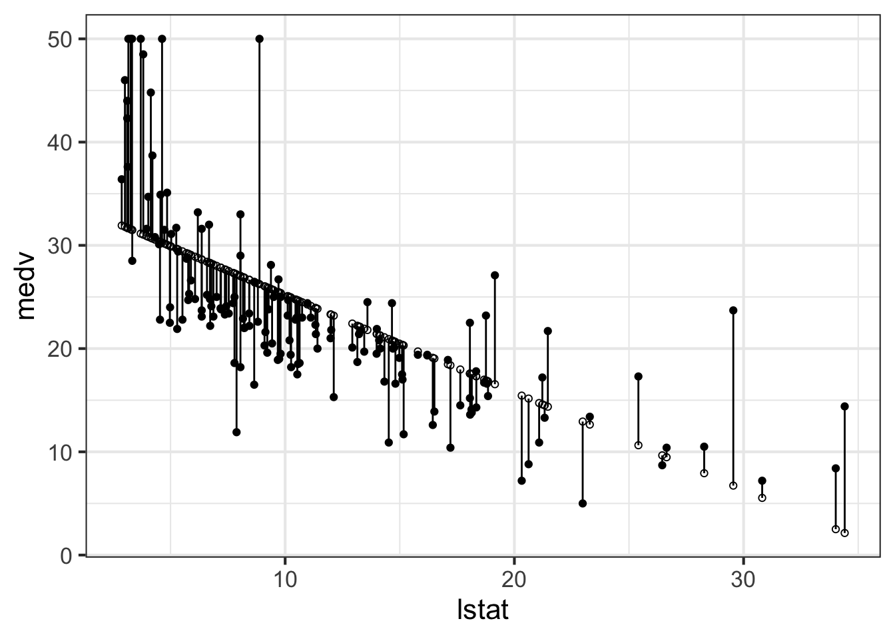
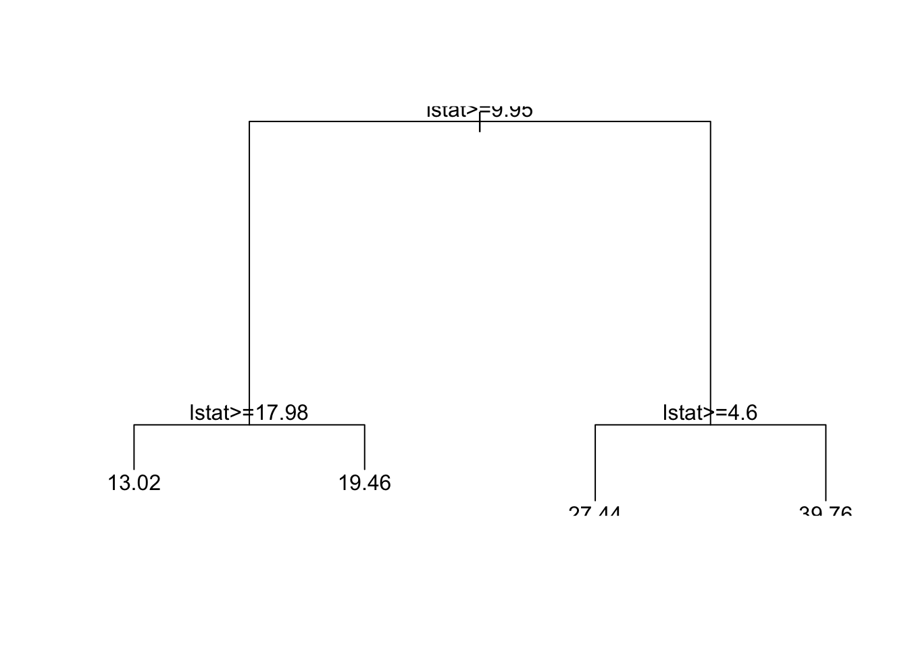
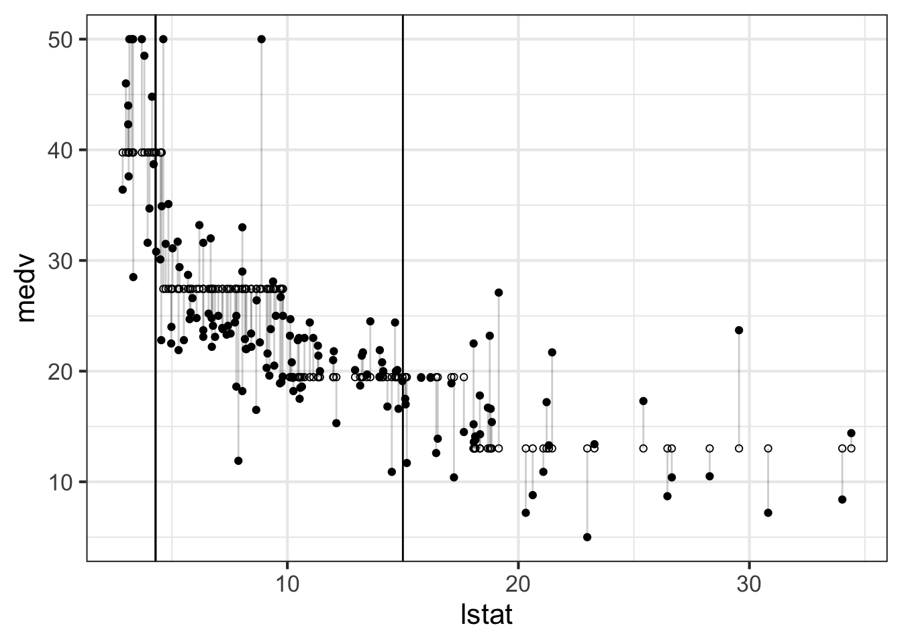

9 Random Forests
9.1 Slang
| Econometrics | ML |
|---|---|
| sample data, to estimate the model | training sample |
| estimating a model | training a model |
| regression parameters | weights |
| regressor, predictor, independent variable, RHS | feature |
| estimating relationship between dependent var and regressors | supervised learning |
| clustering | unsupervised learning |
| discrete response problems | classification problems |
9.2 The Boston housing data set, again
As in a previous exercise, we will work with Boston, which is part of the MASS package. The data set was used in an 1978 article on hedonic price estimation and the measurement for the demand for clean air.
For an explanation of variable names, check out the documentation:
Again, we want to keep the data in a tibble, for convenience:
Most predictive modeling is subject to the danger of overfitting. We will discuss the concept later on. This means that a model can perform well in within the sample it was estimated, but terrible, if it is applied to new data. A popular way to control the problem is to estimate (train) the model on a part of the original data only (e.g. 70%), and use the rest to test the model afterwards. To separate the dataset, we first add an ID column:
The sample_frac() function allow as to pick a percentage of all rows from
the original dataset:
boston_train_with_id <- boston_with_id %>%
sample_frac(0.7)
boston_train <- boston_train_with_id %>%
select(-id)This is the datset we will use for estimating our models. anti_join() can
be used to retrieve all rows that are not within boston_train, based on the
id:
This is the datset we will use for evaluating our models.
9.3 Prediction with OLS
We can use the OLS model to perform predictions of the median house value.
The OLS curve covers the predicted values of the model. Let’s recapitulate
and see, how the median value of owner-occupied homes, medv, can pe
predicted by the neighborhood, as measured by the percentage of lower status
population, lstat.
m_ols <- lm(medv ~ lstat, data = boston_train)
boston_test %>%
mutate(predict = predict(m_ols, newdata = boston_test)) %>%
ggplot(aes(x = lstat, y = medv)) +
geom_point() +
geom_point(mapping = aes(y = predict), shape = 21) +
geom_segment(mapping = aes(xend = lstat, yend = predict))
9.4 Decision Trees
A decision tree is tree-like structure of decisions and their possible consequences. In a decision tree model, the prediction depends on particular value of a variable. For example:
library(rpart)
m_tree_1 <- rpart(medv ~ lstat, data = boston_train, method = "anova", maxdepth = 1)
m_tree_1## n= 354
##
## node), split, n, deviance, yval
## * denotes terminal node
##
## 1) root 354 31907.440 22.72684
## 2) lstat>=9.615 214 4907.116 17.42850 *
## 3) lstat< 9.615 140 11809.990 30.82571 *boston_test %>%
mutate(predict = predict(m_tree_1, newdata = boston_test)) %>%
ggplot(aes(x = lstat, y = medv)) +
geom_point() +
geom_point(mapping = aes(y = predict), shape = 21) +
geom_segment(mapping = aes(xend = lstat, yend = predict), alpha = 0.2) +
geom_vline(aes(xintercept = 9.95))More interesting trees can be grown if we increase the depth of a tree. Here, we let the tree grow to a depths of 2, which allows for four possible prediction values:
## n= 354
##
## node), split, n, deviance, yval
## * denotes terminal node
##
## 1) root 354 31907.4400 22.72684
## 2) lstat>=9.615 214 4907.1160 17.42850
## 4) lstat>=15 118 2192.4100 14.83051 *
## 5) lstat< 15 96 939.2841 20.62188 *
## 3) lstat< 9.615 140 11809.9900 30.82571
## 6) lstat>=4.475 107 5141.7700 27.63738 *
## 7) lstat< 4.475 33 2053.7160 41.16364 *
boston_test %>%
mutate(predict = predict(m_tree_2, newdata = boston_test)) %>%
ggplot(aes(x = lstat, y = medv)) +
geom_point() +
geom_point(mapping = aes(y = predict), shape = 21) +
geom_segment(mapping = aes(xend = lstat, yend = predict), alpha = 0.2) +
geom_vline(aes(xintercept = 4.295)) +
geom_vline(aes(xintercept = 4.295)) +
geom_vline(aes(xintercept = 15))
Analogous to multiple regression, we also can grow trees that depend on more
than variable. Here, our prediction depends both on the average number of
rooms per dwelling, rm and the percentage of lower status population
lstat.
## n= 354
##
## node), split, n, deviance, yval
## * denotes terminal node
##
## 1) root 354 31907.4400 22.72684
## 2) lstat>=9.615 214 4907.1160 17.42850
## 4) lstat>=15 118 2192.4100 14.83051 *
## 5) lstat< 15 96 939.2841 20.62187 *
## 3) lstat< 9.615 140 11809.9900 30.82571
## 6) rm< 7.437 117 5158.7180 27.87521 *
## 7) rm>=7.437 23 451.4722 45.83478 *9.5 Random Forest
Random forest takes random subsets of data and train trees on each subset. That is the reason behind the name for this method: random (subsets) forest (trees). When predicting new data from the test set each tree produces its own prediction. Then the predictions from all the trees are combined together (averaged). This is why random forest can approximate linear patterns, even when the single trees, as we saw above, only produce mean values for different ranges of values.
The randomForest package offers basic random forest estimation in R:
Because random forests are based on random sampling, setting the seed is needed to make the estimation reproducible:
Let’s start with a simple example:

boston_test %>%
mutate(predict = predict(m_forest, newdata = boston_test)) %>%
ggplot(aes(x = lstat, y = medv)) +
geom_point() +
geom_point(mapping = aes(y = predict), shape = 21) +
geom_segment(mapping = aes(xend = lstat, yend = predict), alpha = 0.2)
We now have a bunch of possible forecasts. Which one should you use. The Root Mean Squared Error, while not the only possible measure, is usually a good starting point. It’s main characteristics are the following:
- Squared - so negative values become positive (deviation is deviation)
- Squared - so large deviations are extra-penalized
- Mean - influence of all errors are summarized with one number
- Root - to go back to original scale after squaring.
boston_test %>%
summarize(
rmse_forest = sqrt(mean((medv - predict(m_forest, newdata = boston_test))^2)),
rmse_tree_1 = sqrt(mean((medv - predict(m_tree_1, newdata = boston_test))^2)),
rmse_ols = sqrt(mean((medv - predict(m_ols, newdata = boston_test))^2))
)## # A tibble: 1 x 3
## rmse_forest rmse_tree_1 rmse_ols
## <dbl> <dbl> <dbl>
## 1 5.33 6.94 5.759.5.1 Using more than one variable
library(randomForest)
m_forest_all <- randomForest(medv ~ ., data = boston_train)
boston_test %>%
mutate(predict = predict(m_forest_all, newdata = boston_test)) %>%
ggplot(aes(x = lstat, y = medv)) +
geom_point() +
geom_point(mapping = aes(y = predict), shape = 21) +
geom_segment(mapping = aes(xend = lstat, yend = predict), alpha = 0.2)##
## Call:
## lm(formula = medv ~ ., data = boston_train)
##
## Residuals:
## Min 1Q Median 3Q Max
## -10.0156 -2.9634 -0.5869 2.1585 25.2777
##
## Coefficients:
## Estimate Std. Error t value Pr(>|t|)
## (Intercept) 44.590000 6.526979 6.832 3.89e-11 ***
## crim -0.149666 0.039656 -3.774 0.000189 ***
## zn 0.059000 0.016785 3.515 0.000499 ***
## indus 0.008600 0.073542 0.117 0.906976
## chasTRUE 4.457064 1.206543 3.694 0.000257 ***
## nox -20.069362 4.775555 -4.203 3.38e-05 ***
## rm 3.435511 0.544755 6.307 8.87e-10 ***
## age -0.000949 0.016257 -0.058 0.953487
## dis -1.756968 0.245438 -7.159 5.06e-12 ***
## rad 0.337495 0.077762 4.340 1.88e-05 ***
## tax -0.013745 0.004314 -3.186 0.001574 **
## ptratio -1.034316 0.159799 -6.473 3.37e-10 ***
## black 0.006549 0.003247 2.017 0.044507 *
## lstat -0.544976 0.062931 -8.660 < 2e-16 ***
## ---
## Signif. codes: 0 '***' 0.001 '**' 0.01 '*' 0.05 '.' 0.1 ' ' 1
##
## Residual standard error: 4.855 on 340 degrees of freedom
## Multiple R-squared: 0.7489, Adjusted R-squared: 0.7392
## F-statistic: 77.98 on 13 and 340 DF, p-value: < 2.2e-16boston_test %>%
mutate(predict = predict(m_ols_all, newdata = boston_test)) %>%
ggplot(aes(x = lstat, y = medv)) +
geom_point() +
geom_point(mapping = aes(y = predict), shape = 21) +
geom_segment(mapping = aes(xend = lstat, yend = predict), alpha = 0.2)boston_test %>%
summarize(
rmse_forest = sqrt(sum((medv - predict(m_forest, newdata = boston_test))^2)),
rmse_tree_1 = sqrt(sum((medv - predict(m_tree_1, newdata = boston_test))^2)),
rmse_ols = sqrt(sum((medv - predict(m_ols, newdata = boston_test))^2)),
rmse_ols_all = sqrt(sum((medv - predict(m_ols_all, newdata = boston_test))^2)),
rmse_forest_all = sqrt(sum((medv - predict(m_forest_all, newdata = boston_test))^2))
)## # A tibble: 1 x 5
## rmse_forest rmse_tree_1 rmse_ols rmse_ols_all rmse_forest_all
## <dbl> <dbl> <dbl> <dbl> <dbl>
## 1 65.8 85.5 70.9 58.0 34.8If the interactions between features are mostly linear (as modeled by linear
regression) then random forest will not beat linear regression no matter
how much data it will have. However if there are interactions in the data the
linear model will require for you to list them in the formula (y ~ x1 * x2)
and random forest would be able to find them on its own.
9.5.2 Variable importance
So we have used OLS, decision trees and random forest to explain the values of
medv. But which independent variables are the most important? We have many
variables, and would like to rank them by importance. How can we do that?
For OLS, the importance can be obtained by the p-value. According to this,
lstat and rm are the most important variables:
## # A tibble: 14 x 5
## term estimate std.error statistic p.value
## <chr> <dbl> <dbl> <dbl> <dbl>
## 1 lstat -0.545 0.0629 -8.66 1.93e-16
## 2 dis -1.76 0.245 -7.16 5.06e-12
## 3 (Intercept) 44.6 6.53 6.83 3.89e-11
## 4 ptratio -1.03 0.160 -6.47 3.37e-10
## 5 rm 3.44 0.545 6.31 8.87e-10
## 6 rad 0.337 0.0778 4.34 1.88e- 5
## 7 nox -20.1 4.78 -4.20 3.38e- 5
## 8 crim -0.150 0.0397 -3.77 1.89e- 4
## 9 chasTRUE 4.46 1.21 3.69 2.57e- 4
## 10 zn 0.0590 0.0168 3.52 4.99e- 4
## 11 tax -0.0137 0.00431 -3.19 1.57e- 3
## 12 black 0.00655 0.00325 2.02 4.45e- 2
## 13 indus 0.00860 0.0735 0.117 9.07e- 1
## 14 age -0.000949 0.0163 -0.0584 9.53e- 1For single trees, the values that split the data at the highest level
should be more important. Again, lstat and rm are the most important
variables:
## n= 354
##
## node), split, n, deviance, yval
## * denotes terminal node
##
## 1) root 354 31907.4400 22.72684
## 2) lstat>=9.615 214 4907.1160 17.42850
## 4) lstat>=15 118 2192.4100 14.83051 *
## 5) lstat< 15 96 939.2841 20.62187 *
## 3) lstat< 9.615 140 11809.9900 30.82571
## 6) rm< 7.437 117 5158.7180 27.87521 *
## 7) rm>=7.437 23 451.4722 45.83478 *For random forest, there are several different measures of variable
importance. We will focus on one of them, the decrease in accuracy. It
measures the percentage of accuracy decrease if one variable is omitted. To
calculate this measure of importance - we need to add importance = TRUE to
our model call:
varImpPlot() gives a convenient overview of variable importance, type = 1
selects the measure of importance, here, the mean decrease in accuracy after
permutation:
Again lstat and rm are the most important variables, but rm seems to be
substantially more important than lstat.
9.5.3 Exercises
Back to the CASchools dataset on test performance, school characteristics
and student demographic backgrounds for school districts in California. As
before, we will enhance the dataset by defining two new variables,
student_teacher_ratio, the student-teacher ratio, and test_score, an
average of two underlying test scores:
library(AER)
data(CASchools)
caschools <-
CASchools %>%
as_tibble() %>%
mutate(student_teacher_ratio = students / teachers) %>%
mutate(test_score = (read + math) / 2) %>%
select(-read, -math, -students, -teachers, -district, -school, -county, -grades)
caschools## # A tibble: 420 x 8
## calworks lunch computer expenditure income english student_teacher…
## <dbl> <dbl> <dbl> <dbl> <dbl> <dbl> <dbl>
## 1 0.510 2.04 67 6385. 22.7 0 17.9
## 2 15.4 47.9 101 5099. 9.82 4.58 21.5
## 3 55.0 76.3 169 5502. 8.98 30.0 18.7
## 4 36.5 77.0 85 7102. 8.98 0 17.4
## 5 33.1 78.4 171 5236. 9.08 13.9 18.7
## 6 12.3 87.0 25 5580. 10.4 12.4 21.4
## 7 12.9 94.6 28 5253. 6.58 68.7 19.5
## 8 18.8 100 66 4566. 8.17 47.0 20.9
## 9 32.2 93.1 35 5356. 7.39 30.1 19.9
## 10 79.0 87.3 0 5036. 11.6 40.3 20.8
## # … with 410 more rows, and 1 more variable: test_score <dbl>Separate the data set into a training and a test set. Make sure the training set contains 75% of the available observations.
Build a decision tree to predict
student_teacher_ratio, using all variables incaschools_train. Use the defaults ofrpart. Draw the resulting decision tree. Store the model asm_tree.From the documentation,
?rpart, can you figure out how the depth of a tree is determined? Which one is the most important variable?Estimate an OLS model to predict
student_teacher_ratio, using all variables incaschools_train. Which one is the most important variable? Store the model asm_ols.grow a random forest to predict
student_teacher_ratio, using all variables incaschools_train. Use the defaults ofrandomForest. Store the model asm_forest.Plot the variable importance for
m_forest. Which one is the most imporant?Using the test data, can you compute RMSE measures for
m_ols,m_tree, andm_forest? Which performs best?
9.6 Classification
This data set provides information on the fate of passengers on the fatal maiden voyage of the ocean liner Titanic, summarized according to economic status (class), sex, age and survival. Titanic dataset is classic example in machine learning, and can be found in the titanic package.
## PassengerId Survived Pclass
## 1 1 0 3
## 2 2 1 1
## 3 3 1 3
## 4 4 1 1
## 5 5 0 3
## 6 6 0 3
## Name Sex Age SibSp Parch
## 1 Braund, Mr. Owen Harris male 22 1 0
## 2 Cumings, Mrs. John Bradley (Florence Briggs Thayer) female 38 1 0
## 3 Heikkinen, Miss. Laina female 26 0 0
## 4 Futrelle, Mrs. Jacques Heath (Lily May Peel) female 35 1 0
## 5 Allen, Mr. William Henry male 35 0 0
## 6 Moran, Mr. James male NA 0 0
## Ticket Fare Cabin Embarked
## 1 A/5 21171 7.2500 S
## 2 PC 17599 71.2833 C85 C
## 3 STON/O2. 3101282 7.9250 S
## 4 113803 53.1000 C123 S
## 5 373450 8.0500 S
## 6 330877 8.4583 QThe goal of the exercise it to predict survival. The datasets come divided
into training and testing set. However, the testing part does not have
survival information and is not useful that way. In the following, we will
limit ourself to the titanic::titanic_train.
Categorical variables will be a problem in random forest, so we will convert them into factors. We also clean up the data and remove missing values. The cleaned dataset looks as follows:
titanic <-
as_tibble(na.omit(titanic::titanic_train)) %>%
select(-Name, -PassengerId, -Cabin, -Ticket, -Embarked) %>%
mutate(Sex = as_factor(Sex)) %>%
mutate(Survived = as_factor(Survived))Survived- Passenger Survival Indicator
Pclass- Passenger Class
Sex- Sex
Age- Age
SibSp- Number of Siblings/Spouses Aboard
Parch- Number of Parents/Children Aboard
Again, the usual separation in test and training data set.
set.seed(0)
titanic_with_id <-
titanic %>%
mutate(id = row_number())
titanic_train_with_id <-
titanic_with_id %>%
sample_frac(0.70)
titanic_train <-
titanic_train_with_id %>%
select(-id)
titanic_test <-
titanic_with_id %>%
anti_join(titanic_train_with_id, by = "id") %>%
select(-id)To start, let’s build a decision tree:
m_titanic_tree <- rpart(Survived ~ ., data = titanic_train)
plot(m_titanic_tree)
text(m_titanic_tree, all = TRUE)## n= 500
##
## node), split, n, loss, yval, (yprob)
## * denotes terminal node
##
## 1) root 500 203 0 (0.59400000 0.40600000)
## 2) Sex=male 319 62 0 (0.80564263 0.19435737)
## 4) Pclass>=1.5 248 35 0 (0.85887097 0.14112903)
## 8) Age>=9.5 227 25 0 (0.88986784 0.11013216) *
## 9) Age< 9.5 21 10 0 (0.52380952 0.47619048)
## 18) SibSp>=2.5 11 0 0 (1.00000000 0.00000000) *
## 19) SibSp< 2.5 10 0 1 (0.00000000 1.00000000) *
## 5) Pclass< 1.5 71 27 0 (0.61971831 0.38028169)
## 10) Age>=36.5 45 12 0 (0.73333333 0.26666667) *
## 11) Age< 36.5 26 11 1 (0.42307692 0.57692308)
## 22) Fare>=61.8 11 4 0 (0.63636364 0.36363636) *
## 23) Fare< 61.8 15 4 1 (0.26666667 0.73333333) *
## 3) Sex=female 181 40 1 (0.22099448 0.77900552)
## 6) Pclass>=2.5 65 31 0 (0.52307692 0.47692308)
## 12) Fare>=20.8 15 2 0 (0.86666667 0.13333333) *
## 13) Fare< 20.8 50 21 1 (0.42000000 0.58000000)
## 26) Age>=17.5 36 17 0 (0.52777778 0.47222222)
## 52) Fare< 15 29 12 0 (0.58620690 0.41379310)
## 104) Fare>=8.29375 16 4 0 (0.75000000 0.25000000) *
## 105) Fare< 8.29375 13 5 1 (0.38461538 0.61538462) *
## 53) Fare>=15 7 2 1 (0.28571429 0.71428571) *
## 27) Age< 17.5 14 2 1 (0.14285714 0.85714286) *
## 7) Pclass< 2.5 116 6 1 (0.05172414 0.94827586) *This has a very simple interpretation: If you are on the Titanic, the best guess is that you will die. If you are male, things look bad, unless you are a child. If you are female, things look better, especially if you travel first class. So it is not very hard to guess the end of the movie Titanic.
Switching to random forest, the output now includes the a confusion matrix. The confusion matrix shows, based on out-of-bag evaluation, which classification has been done correctly and which has not. 270 deaths has been predicted correctly, 151 survivals have been predicted correctly. On the other hand, 27 dying passengers have been incorrectly predicted to survive, while 52 surviving passengers have been incorrectly predicted to to die.
set.seed(0)
m_titanic_forest <- randomForest(Survived ~ ., data = titanic_train, importance = TRUE)
m_titanic_forest##
## Call:
## randomForest(formula = Survived ~ ., data = titanic_train, importance = TRUE)
## Type of random forest: classification
## Number of trees: 500
## No. of variables tried at each split: 2
##
## OOB estimate of error rate: 15.8%
## Confusion matrix:
## 0 1 class.error
## 0 270 27 0.09090909
## 1 52 151 0.25615764The out-of-bag forecast error are usually a good way to quickly assess the forecast accuracy of a random forest model. However, if we want to run the model on our test data, compute the confusion table as follows:
tibble(
predicted = predict(m_titanic_forest, newdata = titanic_test),
actual = titanic_test$Survived
) %>%
group_by(predicted, actual) %>%
summarize(count = n())## # A tibble: 4 x 3
## # Groups: predicted [2]
## predicted actual count
## <fct> <fct> <int>
## 1 0 0 107
## 2 0 1 26
## 3 1 0 20
## 4 1 1 61The corresponding out-of-bag confusion table as is as follows:
tibble(
predicted = predict(m_titanic_forest),
actual = titanic_train$Survived
) %>%
group_by(predicted, actual) %>%
summarize(count = n())## # A tibble: 4 x 3
## # Groups: predicted [2]
## predicted actual count
## <fct> <fct> <int>
## 1 0 0 270
## 2 0 1 52
## 3 1 0 27
## 4 1 1 151Finally, which variables are the important one?